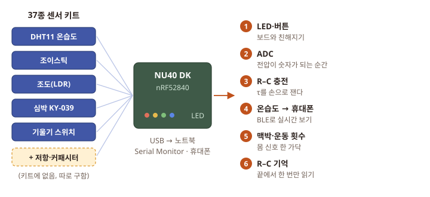
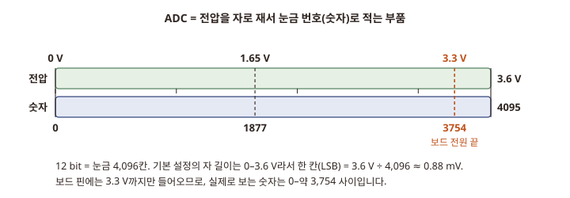
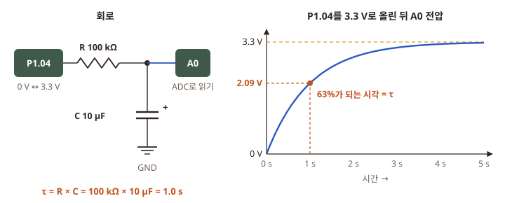
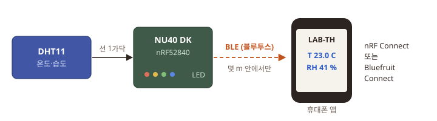
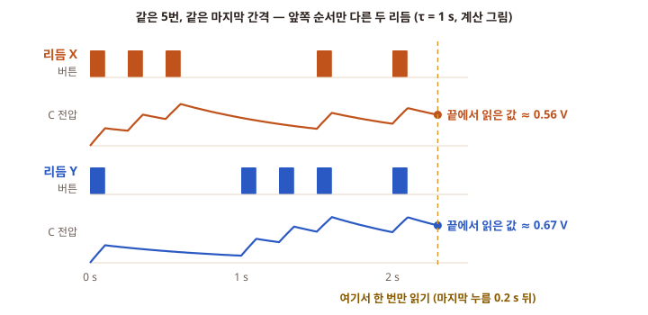

사이드 프로젝트: NU40 DK와 센서 키트로 하루 만들기
누코더스 Playground에서 board 하나와 37종 키트로 작은 장치 여섯 개를 만들고, 그중 둘은 우리 RC 연구로 바로 이어 붙입니다

무엇을 하나 NU40 DK board에 37종 센서 키트의 module을 선 3가닥으로 하나씩 꽂고, 복사해 붙여 넣는 짧은 코드로 작은 장치 여섯 개를 만듭니다. 하나에 30–90분입니다. 순서대로 다 할 필요는 없고, 아래 표에서 고르면 됩니다.
이 페이지를 끝내면 얻는 것 (1) Serial Monitor에 찍힌 내 손·내 방의 숫자들(버튼 횟수, 전압, 온도·습도, 맥박). (2) 휴대폰 화면에 뜨는 연구실 온습도. (3) 저항과 커패시터로 직접 잰 τ 한 개(예: 1.0 s). (4) "끝에서 한 번만 읽어도 앞의 순서가 남아 있다"를 보여 주는 숫자 두 묶음. 결과는 하면서 하나씩 나오니 지금 미리 이해하지 않아도 됩니다.
왜 하나 우리 연구의 이온 소자는 결국 전압을 걸고, 남은 흔적을 ADC로 읽는 부품입니다. 소자가 오기 전에 board·ADC·배선에 손을 익혀 두면, 소자가 왔을 때 "소자 문제인지 배선 문제인지"를 가를 수 있습니다. 특히 미니 3과 미니 6의 R–C 회로는 이온 소자를 가장 단순하게 흉내 낸 것입니다. 나중에 R–C 자리에 소자를 꽂으면 같은 코드로 같은 질문을 할 수 있습니다.
- 오늘 밤설치 확인 · 30분
- →
- 미니 1 LED·버튼30분
- →
- 미니 2 ADC30–40분
- →
- 미니 3 R–C τ45–60분 · 부품 필요
- →
- 미니 4 온습도 → 휴대폰60–90분
- →
- 미니 5 맥박·운동45분
- →
- 미니 6 R–C 기억45분 · 부품 필요
Physical AI Playground: NUcoders Vol.2 — 11월 7일(토) 13:00–18:00, 서울. 정확한 주소는 신청자에게만 보입니다 [행사 페이지].
- 13:00–14:00 초기 세팅: NU40 DK 연결, 개발 환경, 생성형 AI 설정, "첫 움직임"까지 멘토가 도와줍니다(선착순 15명).
- 14:00–18:00 자유 제작: 정해진 과제가 없습니다. 만들다 막히면 옆의 멘토에게 묻습니다. 중간에 오가도 됩니다.
- 행사 페이지 표현으로는 교육·워크숍·해커톤이 아닌 놀이터입니다. 그래서 이 페이지처럼 내 계획을 들고 가면 시간을 잘 씁니다.
- 필수 준비물: 노트북, NU40 DK, USB 케이블. 해 보고 싶은 센서·부품도 가져오라고 되어 있습니다 → 37종 키트를 챙깁니다.
- 현장 판매(운영진에게 결제) [판매 페이지]: 센서·module 1,000원(페이지 표기 "종류당 10개", 정확한 뜻은 미확인 — 현장에서 물어봄), 디스플레이 세트(LCD + 점퍼선 + breadboard) 6,000원, 점퍼선 5개 500원. 판매 센서는 "아두이노 37종 센서모듈 키트 [SZH-EK009]"에서 나온 것이라고 적혀 있습니다. 저항·커패시터는 판매 목록에 없습니다.
- 신청은 이미 마감되었습니다. 내 신청이 되어 있는지 Luma 앱·메일로 확인합니다 [내 신청 상태 미확인].
아래 코드 8개는 NU40 DK용 컴파일만 확인했고(2026-11-06, arduino-cli, NUBoards nRF52 1.0.2, DHT sensor library 1.4.7 + Adafruit Unified Sensor 1.1.15 — 8개 모두 오류 없음), board Upload와 실물 동작은 하지 않았습니다. 그래서 Serial Monitor 화면 상자는 모두 코드의 출력문을 읽어 만든 예상 화면이며, 제목에 "예상 (실물 미검증)"이라고 적었습니다. 숫자는 board·부품마다 다릅니다. 키트 module의 핀 순서는 제품마다 달라 module에 인쇄된 글자(S, +, −)를 직접 보고 꽂습니다 [사진 확인].
- 핀의 한계와 module의 전원 범위는 다른 문제입니다.
- board 핀이 받는 신호: NU40 DK 핀은 3.3 V 신호용이고 5 V를 견디지 못합니다(5 V tolerant 아님). 핀에 들어가는 신호는 항상 0–3.3 V.
- module이 켜지는 전원 범위: module마다 다릅니다. 이 페이지의 module은 대부분 전원 전압을 나눠 내보내는 구조라, 3.3V 핀에서 켜면 출력도 3.3 V를 넘지 않습니다. 단, 모든 module이 3.3 V에서 동작하지는 않으므로 꽂기 전에 module 전압 표를 봅니다.
- USB를 뺀 채로 배선을 바꿉니다. 꽂을 때는 GND → 3.3V → 신호선 순서, 다 꽂고 눈으로 한 번 본 뒤 USB를 꽂습니다.
- 몸에 대는 센서(맥박)는 노트북을 배터리로 돌릴 때만. 충전기를 노트북에서 뽑고 씁니다. 콘센트에 연결된 장치와 몸이 전선으로 이어지지 않게 하기 위해서입니다.
- 릴레이 module로 콘센트 전기(220 V)를 다루지 않습니다. 키트의 릴레이는 이 페이지에서 쓰지 않습니다. 레이저 module은 눈에 비추지 않습니다.
- 전해 커패시터는 방향이 있습니다. 긴 다리(+)·띠 표시(−)를 확인합니다. 거꾸로 꽂으면 부풀거나 터질 수 있습니다. 이 페이지 회로는 3.3 V라 위험은 작지만 습관으로 지킵니다.
내일 무엇부터
5시간(14–18시 + 세팅 시간)에 다 하려면 빠듯합니다. ★가 적은 것부터 하고, 저항·커패시터를 구했는지에 따라 길을 고릅니다.
| 순서 | 미니 프로젝트 | 예상 시간 | 난이도 | 키트 module | 살 것·구할 것 |
|---|---|---|---|---|---|
| 1 | LED 깜빡이기 + 버튼 | 30분 | ★ | 없음 (board의 LED·버튼) | 없음 |
| 2 | ADC: 손잡이를 돌리며 숫자 보기 | 30–40분 | ★ | 조이스틱(KY-023) 또는 조도(LDR) module | 점퍼선 3가닥 |
| 3 | R–C 충전 곡선으로 τ 재기 | 45–60분 | ★★ | 없음 | 저항 100 kΩ, 전해 커패시터 10 µF, breadboard, 수-수 점퍼선 |
| 4 | 연구실 온습도를 휴대폰으로 | 60–90분 | ★★ | DHT11 온습도(KY-015) | 휴대폰 앱(무료) |
| 5 | 맥박 파형 · 운동 횟수 | 45분 | ★★ | 심박(KY-039), 기울기 스위치(KY-020) | 없음 |
| 6 | R–C로 "끝에서 한 번만 읽기" | 45분 | ★★★ | 없음 | 미니 3과 같은 부품 (+ 있으면 1 µF, 100 µF) |
추천 순서.
- 저항·커패시터를 구했으면: 1 → 2 → 3 → 6 → (남으면) 4. 우리 연구와 가장 가까운 길입니다.
- 못 구했으면: 1 → 2 → 4 → 5. 저항·커패시터는 디바이스마트 같은 부품 가게에서 나중에 사서 집에서 3·6을 합니다. 현장 멘토에게 남는 부품이 있는지 물어봐도 됩니다 [현장에 있는지 미확인].
module: 센서 하나와 그것이 일하는 데 필요한 작은 부품을 손톱만 한 기판에 붙여 둔 것. 다리가 보통 3개입니다: S(signal, 신호), +(전원), −(GND, 0 V).
breadboard: 납땜 없이 부품 다리를 꽂아 잇는 구멍판. 번호 하나(행)의 a–e 다섯 구멍, f–j 다섯 구멍이 각각 속에서 이어져 있습니다(그림).
오늘 밤 할 것 (30분)
내일 세팅 시간에도 도와주지만, 인터넷이 필요한 설치는 미리 해 두면 빠릅니다.
- Arduino IDE 2와 NU40 DK board package: P3 페이지의 준비: PC에 Arduino IDE 2 깔기를 끝까지 합니다. P3.1 첫 연결에서 LED1이 깜빡였다면 이미 된 것입니다.
- DHT library(미니 4용): Arduino IDE 왼쪽 세로 줄의 세 번째 아이콘(책 모양, Library Manager) → 검색 칸에
DHT sensor library→ DHT sensor library by Adafruit의 INSTALL → "다른 library도 같이 깔까요?" 창이 뜨면 INSTALL ALL. (같이 깔리는 것은 Adafruit Unified Sensor입니다.) - 휴대폰 앱(미니 4용): 앱 스토어에서 nRF Connect(Nordic Semiconductor) 또는 Bluefruit Connect(Adafruit)를 설치합니다. 둘 다 무료입니다 [가격·앱 이름은 스토어에서 확인].
- 키트 열어 보기: 아래 module이 있는지 봅니다. 키트마다 구성이 조금씩 달라 이 페이지에서는 일반적인 37종 키트 목록으로 적었습니다 [내 키트 구성 미확인]. DHT11(파란 상자 모양 센서), 조이스틱, 조도(LDR, 빛에 반응하는 둥근 부품), 심박(KY-039, 빨간·투명 LED 두 개가 마주 보는 모양), 기울기 스위치(KY-020).
- 노트북 충전, USB 케이블(데이터용) 챙기기.
공통: 코드 올리는 순서
미니 프로젝트마다 이 순서를 그대로 씁니다. P3 페이지의 P3.1 첫 연결과 같은 방법입니다.
새 sketch에 붙여 넣고 이름 붙이기
할 일
- Arduino IDE 위쪽 메뉴 File → New Sketch. 새 창이 열립니다.
- 흰 편집 창 클릭 → Ctrl+A → Delete로 미리 적힌 글을 지웁니다.
- 이 페이지 코드 상자 오른쪽 위의 복사 아이콘 → 편집 창 클릭 → Ctrl+V.
- File → Save As… → 파일 이름에 그 미니 프로젝트의 이름(예:
side1_blink_button) → 저장.
Upload하고 Serial Monitor 열기
할 일
- 창 위쪽 선택 상자에
NU40DK nRF52840과 내 COM 번호가 보이는지 봅니다(아니면 board와 port 고르기). - Upload(→ 단추). 아래 Output 창에 글이 흐르고, 오른쪽 아래에 Done uploading.이 뜨면 됩니다(첫 번째는 1–2분).
- 오른쪽 위 돋보기 아이콘(Serial Monitor) → 오른쪽 드롭다운을 115200 baud로.
Adafruit_TinyUSB.h: No such file or directory→ board가 NU40DK nRF52840으로 선택되지 않았습니다.- Upload가 계속 실패 → RESET 버튼을 빠르게 두 번 누르면 board가 부트로더 모드(코드를 받는 대기 상태)로 들어가고 PC에
BARAM-NU40이라는 드라이브가 생긴다고 합니다. COM 번호가 바뀔 수 있으니 port를 다시 고르고 Upload합니다 [Zephyr NU40 문서의 설명, Arduino IDE에서 확인은 미확인]. - 첫 줄(
#로 시작하는 줄)이 안 보이면 Serial Monitor를 늦게 연 것입니다. board의 RESET을 한 번 누르면 처음부터 다시 나옵니다.
sketch: Arduino IDE에서 부르는 코드 한 벌. 같은 이름의 폴더에 .ino 파일로 저장됩니다.
Serial Monitor: board가 USB로 보낸 글자를 PC 화면에 보여 주는 칸. 115200은 글자를 주고받는 속도(baud)로, board 코드와 같아야 글자가 안 깨집니다.
공통: NU40 DK의 핀
배선 표에 나오는 핀만 적습니다. 코드 번호는 board package의 핀 정의 파일(variant.h)에서 확인했습니다 [variant.h]. board에 인쇄된 이름이 아래와 같은지는 사진으로 확인하지 않았습니다 [사진 확인].
| 이 페이지에서 부르는 이름 | 칩의 핀 이름 | 코드에 쓰는 번호 | 하는 일 |
|---|---|---|---|
| 3.3V (3V3) | — | — | module 전원 + |
| GND | — | — | module 전원 − (0 V) |
| A0 | P0.02 | A0 |
아날로그 입력 (ADC). 미니 2·3·5·6 |
| A1 | P0.03 | A1 |
아날로그 입력 (여분) |
| P1.04 | P1.04 | 36 (= 32 + 4) |
디지털 입·출력. 미니 3·4·5·6 |
| LED1 | P0.13 | LED_BUILTIN 또는 13 |
board의 LED |
| LED2 | P0.14 | 14 |
board의 LED |
| 버튼1 | P0.11 | 11 |
board의 버튼. 누르면 0 (pull-up) |
| 버튼2 | P0.12 | 12 |
board의 버튼 |
핀 번호 규칙은 P3와 같습니다: P0.xx → xx, P1.xx → 32 + xx. A6·A7(P0.30·P0.31)은 다른 기능과 겹치므로 쓰지 않습니다.
점퍼선 고르기. 키트 module의 다리는 튀어나온 핀(수)입니다. board의 핀이 튀어나온 핀이면 암-암 선, 구멍(암)이면 수-암 선을 씁니다 [board 헤더 모양 사진 확인]. 판매 페이지의 점퍼선(5개 500원)은 "모든 종류"라고 되어 있습니다.
공통: module 전원·출력 전압 표
"5 V라고 적힌 module도 3.3 V로 켠다"는 이 페이지의 module에만 맞는 말이고, 이유가 있습니다. board 핀의 보호 한계(신호는 3.3 V까지)와 module의 전원 범위(몇 V로 켜야 일하나)는 서로 다른 문제입니다. 아래 표는 이 페이지에서 쓰는 module마다 둘을 따로 적은 것입니다. 키트의 정확한 제품 모델은 모르므로([내 키트 구성 미확인]) 같은 이름의 흔한 module 문서를 근거로 적었습니다.
| module (쓰는 곳) | 전원 범위 | 출력 신호 | 핀 순서 (흔한 예) | 3.3 V로 켜면 | 근거 |
|---|---|---|---|---|---|
| 조이스틱 KY-023 (미니 2) | 3.3 V(제조사 표기), 판매처는 3.3–5 V | VRx·VRy: 아날로그 0 V–전원 전압(가변저항이 전원을 나눔). SW: 누르면 GND | GND, +5V, VRx, VRy, SW (제품마다 다름) | 됨. 출력 ≤ 3.3 V, 가운데 약 1.65 V. SW는 칩 안 pull-up 필요 | Joy-IT 제품 페이지, Joy-IT sensorkit |
| 조도 KY-018 (미니 2 대신) | 3.3–5 V | 아날로그 0 V–전원 전압(LDR과 10 kΩ 분압) | S, + (가운데), − | 됨. 출력 ≤ 3.3 V | Joy-IT sensorkit |
| 온습도 DHT11 / KY-015 (미니 4) | 데이터시트 판마다 다름: 3–5.5 V, 3.3–5.5 V, 3.5–5.5 V | 디지털 한 선. high 전압 = module pull-up이 이어진 전원 전압 | S, + (가운데), − (판매처에 따라 VCC·DATA·GND) | 하한 근처. 짧은 선으로 먼저 해 봄. 데이터시트가 3.5 V부터라고 적은 판도 있어 안 될 수 있음 | DHT11 데이터시트(번역판), Aosong DHT11 부품 정보, Joy-IT sensorkit |
| 심박 KY-039 (미니 5) | 3.3 V·5 V | 아날로그 (적외선 LED + 빛 받는 부품) | S, + (가운데), − | 됨. 출력 ≤ 3.3 V. 신호 크기는 전원에 따라 달라질 수 있음 미확인 | Joy-IT 제품 페이지, Joy-IT sensorkit |
| 기울기 스위치 KY-020 (미니 5) | 3.3–5 V | 디지털 (쇠구슬 접점이 붙었다 떨어짐) | S, + (가운데), − | 됨. 출력 ≤ 3.3 V | Joy-IT sensorkit |
표에 없는 module이나 모양이 다른 module이면 이렇게 합니다.
- module 뒷면에 칩이 없고 저항·가변저항·스위치만 있으면(조이스틱·조도·기울기처럼), 출력은 전원 전압을 넘지 않습니다. 3.3 V로 켭니다.
- 칩이 있거나 무엇인지 모르면: module을 3.3 V로 켜고, 신호 핀을 board에 꽂기 전에 멀티미터(DC V)로 S–GND 전압을 먼저 잽니다. 손잡이를 돌리거나 센서를 가리며 잰 가장 큰 값이 3.3 V 이하일 때만 board에 연결합니다.
- 5 V로 켜야만 일하는 module(3.3 V에서 출력이 안 나오거나 데이터시트 하한이 3.3 V보다 높음)의 출력이 3.3 V를 넘으면, 핀에 바로 꽂지 않습니다. 한 방향 신호(아날로그 출력, 스위치 출력)는 저항 두 개 분압(voltage divider)으로 낮춥니다. 예: 신호 → 10 kΩ → 핀, 핀 → 15 kΩ → GND이면 5 V가 5 × 15/25 = 3.0 V가 됩니다. DHT11처럼 한 선으로 주고받는 신호는 분압으로는 안 되고 양방향 level shifter module이 필요합니다.
- module의 + 를 board의 5V 핀에 꽂는 것은 위 경우에만, 신호 쪽 대책을 갖춘 뒤입니다.
미니 1. LED 깜빡이기 + 버튼
상황. 전등 스위치를 떠올려 보세요. 누르면 켜지고, 떼면 꺼집니다. board도 똑같은 일을 할 수 있는데, 차이는 "누르면 켜라"를 내가 코드로 정한다는 것입니다. 첫 번째로 board의 LED 두 개와 버튼 하나만으로 이 규칙을 만들어, 코드 → Upload → Serial Monitor의 한 바퀴를 손에 익힙니다.
입력 → 출력. 버튼1 누름(입력) → LED2 켜짐 + Serial Monitor에 pressed 1, pressed 2 …(출력). LED1은 그동안 0.5초마다 혼자 깜빡입니다.
부품. board와 USB 케이블뿐입니다. 배선 없음.
digital 입력: 핀의 전압을 0 아니면 1, 두 가지로만 읽는 것. 3.3 V 근처면 1(HIGH), 0 V 근처면 0(LOW).
pull-up: 버튼을 안 눌렀을 때 핀을 3.3 V 쪽으로 살짝 끌어올려 두는 저항. 이게 없으면 안 누른 핀은 아무 전선에도 안 이어진 "떠 있는" 상태가 되어 0과 1을 멋대로 오갑니다. 버튼을 누르면 핀이 GND에 붙어 0이 됩니다. 그래서 이 board의 버튼은 누르면 0입니다. 코드의 INPUT_PULLUP이 칩 안의 pull-up을 켭니다.
#include <Adafruit_TinyUSB.h> // NU40: USB 시리얼(Serial)을 쓰려면 필요 (없으면 링크 오류)
const int BTN1 = 11; // 보드 버튼1 (P0.11). 안 누르면 1, 누르면 0
const int LED2_PIN = 14; // 보드 LED2 (P0.14)
int presses = 0; // 지금까지 누른 횟수
int before = HIGH; // 바로 전에 읽은 버튼 값
unsigned long lastBlink = 0; // LED1을 마지막으로 뒤집은 시각 (ms)
void setup() {
Serial.begin(115200);
while (!Serial && millis() < 3000) delay(10); // USB 시리얼이 열릴 때까지 최대 3초
pinMode(LED_BUILTIN, OUTPUT); // LED1 (P0.13)
pinMode(LED2_PIN, OUTPUT);
pinMode(BTN1, INPUT_PULLUP); // 칩 안의 pull-up 저항을 켬: 안 누르면 HIGH
Serial.println("# side1: LED1 blinks every 0.5 s. Hold button1 -> LED2 on.");
}
void loop() {
// 1) 0.5초마다 LED1 뒤집기 (delay를 쓰지 않아서 그동안에도 버튼을 볼 수 있음)
if (millis() - lastBlink >= 500) {
lastBlink = millis();
digitalWrite(LED_BUILTIN, !digitalRead(LED_BUILTIN));
}
// 2) 버튼1을 누르고 있는 동안 LED2 켜기
int now = digitalRead(BTN1);
digitalWrite(LED2_PIN, now == LOW ? HIGH : LOW);
// 3) 안 누름 -> 누름으로 바뀐 순간에만 한 번 세기
if (before == HIGH && now == LOW) {
presses++;
Serial.print("pressed ");
Serial.print(presses);
Serial.print(" t_ms ");
Serial.println(millis());
delay(30); // 접점 튐(bounce)을 30 ms 동안 무시
}
before = now;
}올리고 눌러 보기
할 일 코드 올리는 순서대로, 이름은 side1_blink_button. Serial Monitor를 연 뒤 버튼1을 몇 번 누릅니다.
# side1: LED1 blinks every 0.5 s. Hold button1 -> LED2 on.
pressed 1 t_ms 4210
pressed 2 t_ms 5034
pressed 3 t_ms 5611t_ms는 board가 켜진 뒤 지난 시간(1/1000초)이라 내 화면에서는 다른 숫자입니다. 누를 때마다 한 줄씩 늘고, 누르고 있는 동안 LED2가 켜지면 성공입니다.
- 버튼을 안 눌렀을 때 LED2가 켜져 있고 누르면 꺼지면, 내 board의 버튼은 누르면 1이 되는 방식입니다. 코드의
now == LOW ? HIGH : LOW를now == HIGH ? HIGH : LOW로,before == HIGH && now == LOW를before == LOW && now == HIGH로,int before = HIGH;를int before = LOW;로 바꿉니다. (Zephyr 문서는 이 board 버튼이 "누르면 0"이라고 적고 있습니다.) - 한 번 눌렀는데 두 줄이 찍히면 접점 튐입니다.
delay(30)을delay(60)으로 늘립니다.
관찰 질문. 버튼을 아주 빠르게 연타하면 t_ms 간격이 가장 짧게 몇 ms까지 나오나요? 그 숫자는 무엇을 뜻할까요?
보통 사람 손은 100–200 ms 간격이 한계입니다. 그보다 짧은 간격(예: 30 ms 이하)이 찍히면 손이 아니라 접점 튐입니다. 코드가 누름 뒤 30 ms를 무시하므로, 이론상 board가 셀 수 있는 가장 짧은 간격은 약 30 ms입니다. P3의 버튼 리듬 실험이 "뗀 뒤 30 ms 안의 재눌림"을 버리는 이유가 이것입니다.
RC 연구와의 연결. 이 버튼이 P3·P4에서 입력 pulse를 만드는 손입니다. 지금 찍힌 t_ms 목록이 곧 "입력 시각 목록"이고, 미니 6에서 이 시각들이 R–C에 흔적을 남깁니다.
미니 2. ADC: 손잡이를 돌리며 숫자 보기
상황. 체중계를 떠올려 보세요. 몸무게는 연속으로 변하는 양인데, 화면에는 "63.4 kg"처럼 눈금 단위로 끊긴 숫자가 뜹니다. board도 전압을 그대로 알 수 없고, 자에 대 보고 눈금 번호를 적습니다. 이 일을 하는 부품이 ADC입니다. 이번에는 조이스틱 손잡이를 기울여 전압을 바꾸면서, 같은 전압이 눈금 수(bit)에 따라 어떤 숫자로 적히는지 봅니다.

ADC (analog-to-digital converter): 전압(아날로그, 연속으로 변하는 값)을 숫자(디지털)로 바꾸는 부품. nRF52840 칩 안에 들어 있습니다.
분해능 (resolution, bit): 자에 눈금이 몇 칸인지. 8 bit = 28 = 256칸, 10 bit = 1,024칸, 12 bit = 4,096칸.
LSB (Least Significant Bit): 눈금 한 칸의 크기. 자 길이 ÷ 칸 수. 이 board 기본 설정에서 12 bit면 3.6 V ÷ 4,096 ≈ 0.88 mV, 8 bit면 3.6 V ÷ 256 ≈ 14 mV입니다. P1.1의 bit·LSB에서 본 그 계산과 같습니다.
왜 3.6 V인가. 이 board package의 ADC 기본 설정은 칩 안의 기준 전압 0.6 V를 6배 한 0–3.6 V를 자 길이로 씁니다. 그리고 analogRead는 따로 정하지 않으면 10 bit로 읽습니다 [board package 코드의 wiring_analog_nRF52.c에서 확인]. 칩 자체는 12 bit(평균을 내면 14 bit)까지 됩니다. 아래 코드는 같은 전압을 8·10·12 bit로 한 번씩 읽어 나란히 찍습니다.
부품. 조이스틱 module(KY-023). 안에 가변저항(돌리면 저항이 변하는 부품) 두 개가 들어 있어, 손잡이를 기울이면 출력 전압이 0 V부터 3.3 V 사이로 변합니다. 조이스틱이 없으면 조도(LDR) module을 같은 자리에 꽂고, 손으로 빛을 가리며 봅니다.
배선 (USB를 뺀 채로)
할 일 아래 순서로 꽂습니다. 조이스틱 핀 이름은 보통 GND, +5V, VRx, VRy, SW입니다 [module 인쇄 확인].
| 순서 | 조이스틱 핀 | board 핀 | 메모 |
|---|---|---|---|
| 1 | GND | GND | |
| 2 | +5V | 3.3V | 이름이 +5V여도 반드시 3.3V에. 그래야 출력이 3.3 V를 안 넘음 |
| 3 | VRx | A0 (P0.02) | 가로 방향 전압 |
| — | VRy, SW | 꽂지 않음 |
조도 module이면: − → GND, + → 3.3V, S → A0.
다 꽂은 뒤 5V 핀에 간 선이 없는지 눈으로 보고 USB를 꽂습니다.
코드 올리고 손잡이 기울이기
할 일 코드 올리는 순서대로, 이름은 side2_adc. Serial Monitor를 열고 손잡이를 가만히 두었다가, 왼쪽 끝 → 오른쪽 끝으로 천천히 기울입니다.
#include <Adafruit_TinyUSB.h> // NU40: USB 시리얼(Serial)을 쓰려면 필요
// 조이스틱 VRx -> A0 (P0.02). 조도 module을 쓰면 S -> A0.
// 이 board package의 기본 설정에서 ADC 자의 길이는 0–3.6 V
void setup() {
Serial.begin(115200);
while (!Serial && millis() < 3000) delay(10);
Serial.println("# side2: same voltage, three rulers (8, 10, 12 bit)");
}
void loop() {
analogReadResolution(8); // 눈금 256칸
int r8 = analogRead(A0);
analogReadResolution(10); // 눈금 1,024칸
int r10 = analogRead(A0);
analogReadResolution(12); // 눈금 4,096칸
int r12 = analogRead(A0);
float volts = r12 * 3.6 / 4096.0; // 숫자 -> 전압 (한 칸 = 3.6 V / 4096)
Serial.print("8bit "); Serial.print(r8);
Serial.print(" 10bit "); Serial.print(r10);
Serial.print(" 12bit "); Serial.print(r12);
Serial.print(" -> "); Serial.print(volts, 3);
Serial.println(" V");
delay(300);
}# side2: same voltage, three rulers (8, 10, 12 bit)
8bit 117 10bit 469 12bit 1877 -> 1.650 V
8bit 117 10bit 470 12bit 1881 -> 1.653 V
8bit 118 10bit 471 12bit 1885 -> 1.657 V
8bit 234 10bit 938 12bit 3754 -> 3.299 V
8bit 0 10bit 0 12bit 3 -> 0.003 V손잡이를 가만히 두면 약 1.65 V(전원의 절반) 근처, 끝까지 기울이면 0 V 근처나 3.3 V 근처가 나옵니다. 가운데 값은 조이스틱마다 조금씩 다릅니다.
- 숫자가 손잡이와 상관없이 마구 변하면 VRx 선이 A0에 안 꽂혔거나(떠 있는 핀) GND가 빠진 것입니다.
- 끝까지 기울여도 3754 근처까지 안 가면 VRy(세로)에 꽂았을 수 있습니다. 손잡이를 위아래로 기울여 봅니다.
관찰 질문 1. 손잡이를 가만히 둬도 12 bit 숫자의 끝자리가 1–3씩 흔들립니다. 8 bit 숫자는 거의 안 흔들립니다. 왜일까요?
12 bit의 눈금 한 칸(0.88 mV)이 전선·전원의 작은 흔들림(noise, 보통 수 mV)보다 작기 때문입니다. 자가 너무 촘촘하면 noise까지 눈금으로 적힙니다. 8 bit의 한 칸(14 mV)은 noise보다 커서 흔들림이 한 칸 안에 숨습니다. 그래서 bit를 늘려도 noise보다 작은 차이는 실제로는 못 봅니다. 이온 소자를 ADC로 읽을 때도 "몇 bit냐"보다 "noise가 몇 mV냐"가 먼저입니다.
관찰 질문 2. 12 bit 숫자 ÷ 10 bit 숫자는 대략 얼마인가요?
약 4입니다(1877 ÷ 469 ≈ 4.0). 12 bit는 10 bit보다 눈금이 2 × 2 = 4배 촘촘하기 때문입니다. 같은 전압을 4배 고운 자로 쟀으니 눈금 번호도 4배가 됩니다.
RC 연구와의 연결. P3에서 소자 전류를 읽는 마지막 단계가 바로 이 ADC입니다(그때는 16 bit ADS1115 module). 소자가 남긴 흔적이 LSB보다 작으면 안 보이고, noise보다 작아도 안 보입니다. 이 두 문턱을 오늘 손으로 확인했습니다.
미니 3. R–C 충전 곡선으로 τ 재기
상황. 뜨거운 물을 머그컵에 부으면 컵이 바로 뜨거워지지 않고 천천히 데워집니다. 커패시터도 같습니다. 저항을 거쳐 전압을 걸면 커패시터의 전압은 천천히 따라 올라갑니다. "얼마나 천천히"를 숫자 하나로 적은 것이 τ(타우, time constant)입니다. 이번에는 board가 전압을 걸고, ADC로 커패시터 전압을 20 ms마다 읽어 τ를 직접 잽니다. P1.2와 P2의 RC 측정에서 수식·소스미터로 보던 τ를, 1,000원어치 부품으로 재는 것입니다.

resistor(저항): 전류가 흐르기 어렵게 하는 부품. 값은 Ω(옴). 100 kΩ = 100,000 Ω. 색 띠로 값을 표시합니다(100 kΩ은 갈색·검정·노랑).
capacitor(커패시터): 전기를 잠깐 담아 두는 작은 물통 같은 부품. 값은 F(패럿). 10 µF = 0.00001 F. 전해 커패시터는 원통 모양이고 + − 방향이 있습니다(긴 다리가 +, 몸통의 띠가 −).
time constant τ: 전압을 바꾼 뒤, 남은 차이의 63%를 따라잡는 데 걸리는 시간. R–C 회로에서는 τ = R × C. 100 kΩ × 10 µF = 1.0 s. 3τ(3초)면 약 95%, 5τ면 약 99%를 따라잡습니다.
부품 (키트에 없음, 따로 구함).
| 부품 | 값 | 몇 개 | 메모 |
|---|---|---|---|
| 저항 | 100 kΩ (1/4 W) | 2 | 10 kΩ도 있으면 좋음 (τ 0.1 s 실험) |
| 전해 커패시터 | 10 µF, 16 V 이상 | 2 | 미니 6용으로 1 µF, 100 µF도 있으면 좋음 |
| breadboard | 작은 것 | 1 | 판매 디스플레이 세트(6,000원)에 들어 있음 |
| 점퍼선 | 수-수 2, board 쪽 선 2 |
가격은 확인하지 않았습니다 [가격 미확인]. 디바이스마트·엘레파츠 같은 부품 가게에서 저항 키트·커패시터 키트로 사면 미니 3·6과 나중의 P3에 같이 씁니다. 커패시터 값은 ±20%까지 다를 수 있습니다(그래서 잰 τ가 1.0 s에서 조금 벗어나는 것이 정상).
breadboard에 꽂기 (USB를 뺀 채로)
할 일 breadboard는 번호가 긴 변을 따라 왼쪽→오른쪽, 전원 줄(rail)이 위·아래에 오게 놓고, 구멍을 "10행 c"처럼 부릅니다(breadboard 속 연결). 자리는 P3의 R–C 첫 배선 배선도와 같습니다.
| 순서 | 무엇을 | 어디에서 | 어디로 |
|---|---|---|---|
| 1 | board GND | board GND | 위 − rail |
| 2 | 저항 100 kΩ | 10행 c | 14행 c (방향 없음) |
| 3 | 커패시터 10 µF | + 다리(긴 다리) → 14행 d | − 다리(띠 쪽) → 15행 d |
| 4 | 수-수 점퍼선 | 15행 a | 위 − rail |
| 5 | 점퍼선 | board P1.04 | 10행 a |
| 6 | 점퍼선 | 14행 a | board A0 |
14행(a–e)이 그림 2의 "가운데 점"입니다. 3.3V 핀은 이번에 쓰지 않습니다(P1.04가 전원 역할).
코드 올리고 τ 읽기
할 일 코드 올리는 순서대로, 이름은 side3_rc_tau. Serial Monitor를 엽니다. board는 6초 비우고 → 6초 재고 → τ를 찍고 → 10초 쉬기를 계속 되풀이합니다.
#include <Adafruit_TinyUSB.h> // NU40: USB 시리얼(Serial)을 쓰려면 필요
// 배선: P1.04 -> R -> (가운데 점) -> C(+), C(-) -> GND, 가운데 점 -> A0
const int CHG = 36; // P1.04 (P1.xx는 32 + xx). R 한쪽 끝에 0 V 또는 3.3 V를 거는 핀
const float R_OHM = 100000.0; // 꽂은 저항 값 (100 kΩ). 바꿔 꽂으면 여기도 고침
const float C_F = 10e-6; // 꽂은 커패시터 값 (10 µF)
const int N = 300; // 20 ms마다 300번 = 6초 기록
float v[N];
float readV() { // A0 전압 (4번 읽어 평균)
long sum = 0;
for (int i = 0; i < 4; i++) sum += analogRead(A0);
return sum / 4.0 * 3.6 / 4096.0;
}
void setup() {
Serial.begin(115200);
while (!Serial && millis() < 3000) delay(10);
analogReadResolution(12);
pinMode(CHG, OUTPUT);
digitalWrite(CHG, LOW);
}
void loop() {
Serial.println("# discharging 6 s ...");
digitalWrite(CHG, LOW); // 0 V: C를 비움
delay(6000);
Serial.println("t_s,V");
digitalWrite(CHG, HIGH); // 3.3 V: 이 순간이 t = 0
unsigned long t0 = millis();
for (int i = 0; i < N; i++) {
while (millis() - t0 < (unsigned long)i * 20) { } // 20 ms 간격 맞추기
v[i] = readV();
if (i % 10 == 0) { // 화면에는 0.2초마다만 찍음
Serial.print(i * 0.02, 2); Serial.print(","); Serial.println(v[i], 3);
}
}
float v0 = v[0], vEnd = v[N - 1];
float level = v0 + 0.632 * (vEnd - v0); // 63.2% 높이
float tau = -1;
for (int i = 1; i < N; i++) {
if (v[i] >= level) { // 처음 넘은 칸과 그 앞 칸 사이를 직선으로 이어 시각 계산
float f = (level - v[i - 1]) / (v[i] - v[i - 1]);
tau = (i - 1 + f) * 0.02;
break;
}
}
Serial.print("# V_start "); Serial.print(v0, 3);
Serial.print(" V, V_end "); Serial.print(vEnd, 3);
Serial.print(" V, 63.2% level "); Serial.print(level, 3); Serial.println(" V");
Serial.print("# tau measured "); Serial.print(tau, 2);
Serial.print(" s, R x C (parts) "); Serial.print(R_OHM * C_F, 2); Serial.println(" s");
Serial.println("# next run in 10 s");
delay(10000);
}# discharging 6 s ...
t_s,V
0.00,0.002
0.20,0.598
0.40,1.088
0.60,1.489
0.80,1.817
1.00,2.086
...
3.00,3.136
...
5.80,3.290
# V_start 0.002 V, V_end 3.292 V, 63.2% level 2.081 V
# tau measured 1.00 s, R x C (parts) 1.00 s
# next run in 10 st_s,V 아래는 0.2초마다 한 줄씩 모두 30줄이 찍힙니다(위에서는 ...로 줄임). 실물에서는 tau measured가 0.8–1.2 s 사이면 정상입니다(커패시터 오차 ±20%).
- 모든 줄이 0.00 근처 → P1.04 선이 다른 핀에 꽂혔거나, 저항이 10행과 14행을 잇지 않았습니다.
- 처음부터 3.3 V 근처 → A0 선이 10행(저항 앞쪽)에 꽂혔습니다. 14행으로 옮깁니다.
tau measured -1.00→ 6초 안에 63%에 못 갔습니다. 커패시터가 10 µF보다 훨씬 큽니다(예: 100 µF). 값을 확인합니다.- 값이 들쭉날쭉 튐 → 15행–rail–GND 선이 빠졌습니다. rail이 가운데서 끊긴 breadboard인지도 봅니다.
관찰 질문. 잰 τ가 R × C(1.00 s)와 몇 % 다른가요? 다른 이유를 두 가지 적어 보세요.
예를 들어 1.08 s면 8% 깁니다. 이유: (1) 커패시터 값 오차: 전해 커패시터는 표시값에서 ±20%까지 다를 수 있어, 이것이 가장 큽니다. (2) 저항 오차(보통 ±1–5%), (3) board의 3.3 V가 정확히 3.300 V가 아님 — 이것은 τ에는 거의 영향이 없습니다. 63% "비율"로 재기 때문입니다. 그래서 τ를 정확히 알려면 "부품 표시값"이 아니라 잰 값을 씁니다. P2에서 소자의 τ를 잴 때도 같습니다.
RC 연구와의 연결. P2에서 소스미터로 잰 RC 모의 소자가 바로 이 회로입니다. R–C 자리에 이온 소자를 꽂으면 같은 코드가 "소자에 전압을 건 뒤 전류(전압)가 얼마나 천천히 따라오는지"를 잽니다. 다만 소자는 전압을 걸 때 극성·크기 제한이 있으므로, 소자를 꽂는 것은 P3의 보호 회로(R_lim, J1)를 갖춘 뒤에 합니다. 부품만 바꿔 꽂으면 되지 않는 경우는 P3의 부품만 바꾸면 되나에 정리했습니다.
미니 4. 연구실 온습도를 휴대폰으로
상황. 이온 소자는 습도에 민감합니다. 물기가 이온이 움직이는 길을 바꾸기 때문입니다. 그래서 측정하는 날의 온도·습도를 같이 적어 두면 나중에 "왜 오늘 소자가 다르게 나왔지?"를 풀 단서가 됩니다. 이번에는 DHT11 센서로 온습도를 재서, 먼저 PC 화면에, 그다음 휴대폰에 띄웁니다.

DHT11: 온도와 상대습도를 재는 작은 센서. 2초에 한 번 정도 읽을 수 있고, 온도는 1 °C, 습도는 1 % 단위로 나옵니다. 정확도는 대략 온도 ±2 °C, 습도 ±5 % 수준이라고 알려져 있습니다 [제품 데이터시트로 확인]. "어제보다 습했나" 같은 비교에는 쓸 만하지만, 논문에 적을 습도계로는 부족합니다.
상대습도 (RH, relative humidity): 공기가 그 온도에서 담을 수 있는 최대 수증기 중 몇 %를 담고 있는지. RH 40 %는 "최대의 40 %".
BLE (Bluetooth Low Energy): 전기를 아주 적게 쓰는 블루투스. 무선 이어폰과 같은 계열이지만 짧은 글·숫자를 보내는 데 맞춰져 있습니다. 거리는 보통 같은 방 정도입니다(벽·몸에 따라 다름).
배선 (USB를 뺀 채로)
할 일 DHT11 module(KY-015)의 핀은 보통 S, 가운데 +, − 순서입니다 [module 인쇄 확인].
| 순서 | DHT11 module 핀 | board 핀 |
|---|---|---|
| 1 | − | GND |
| 2 | + (가운데) | 3.3V |
| 3 | S | P1.04 |
DHT11의 전원 범위는 데이터시트 판마다 3–5.5 V, 3.3–5.5 V, 3.5–5.5 V로 다르게 적혀 있어, 3.3 V는 하한 근처입니다(module 전압 표). 선을 짧게 해서 3.3 V로 먼저 해 봅니다. module에 pull-up 저항이 이미 붙어 있는 것이 보통이며, 그 저항이 + 핀에 이어져 있어서 3.3 V로 켜면 신호도 3.3 V를 넘지 않습니다.
먼저 PC 화면에 띄우기
할 일 DHT library가 깔려 있어야 합니다(오늘 밤 할 것의 DHT library 설치). 코드 올리는 순서대로, 이름은 side4_dht_serial.
#include <Adafruit_TinyUSB.h> // NU40: USB 시리얼(Serial)을 쓰려면 필요
#include <DHT.h> // Library Manager에서 'DHT sensor library' (Adafruit) 설치
const int DHT_PIN = 36; // P1.04 <- DHT11 module의 S(신호) 핀
DHT dht(DHT_PIN, DHT11);
void setup() {
Serial.begin(115200);
while (!Serial && millis() < 3000) delay(10);
dht.begin();
Serial.println("# side4: DHT11 every 2 s");
}
void loop() {
delay(2000); // DHT11은 1초에 한 번보다 자주 읽으면 안 됨
float rh = dht.readHumidity(); // 상대습도 (%)
float tc = dht.readTemperature(); // 온도 (°C)
if (isnan(rh) || isnan(tc)) {
Serial.println("read failed (check wiring: S, +, -)");
return;
}
Serial.print("T "); Serial.print(tc, 1);
Serial.print(" C RH "); Serial.print(rh, 0);
Serial.print(" % t_s "); Serial.println(millis() / 1000);
}# side4: DHT11 every 2 s
T 23.0 C RH 41 % t_s 5
T 23.0 C RH 41 % t_s 7
T 24.0 C RH 47 % t_s 9세 번째 줄은 센서에 입김을 한 번 불었을 때의 예입니다. 습도가 몇 % 뛰었다가 천천히 돌아오면 정상입니다.
read failed (check wiring: S, +, -)만 나옴 → S가 P1.04에 꽂혔는지, +가 3.3V인지 봅니다. module 핀 순서가 다를 수 있으니 인쇄 글자를 다시 봅니다. 배선이 맞는데도 계속 실패하면 3.3 V가 이 센서의 하한 아래일 수 있습니다. 이때 +를 5V로 바로 옮기지 않습니다(신호선이 5 V가 됨). 양방향 level shifter가 필요합니다(module 전압 표).- 컴파일 때
DHT.h: No such file or directory→ DHT library가 안 깔렸습니다(오늘 밤 할 것).
휴대폰으로 보내기 (BLE)
할 일 배선은 그대로. 새 sketch에 아래를 붙여 넣고 이름은 side4_dht_ble로 Upload합니다. board는 LAB-TH라는 이름으로 "나 여기 있어요" 신호(광고)를 계속 내보냅니다.
#include <Adafruit_TinyUSB.h> // NU40: USB 시리얼(Serial)을 쓰려면 필요
#include <bluefruit.h> // board package에 들어 있는 BLE library
#include <DHT.h> // 'DHT sensor library' (Adafruit)
const int DHT_PIN = 36; // P1.04 <- DHT11의 S 핀
DHT dht(DHT_PIN, DHT11);
BLEUart bleuart; // 휴대폰과 글자를 주고받는 통로 (Nordic UART Service)
void setup() {
Serial.begin(115200);
while (!Serial && millis() < 3000) delay(10);
dht.begin();
Bluefruit.begin();
Bluefruit.setName("LAB-TH"); // 휴대폰 목록에 보일 이름
bleuart.begin();
Bluefruit.Advertising.addFlags(BLE_GAP_ADV_FLAGS_LE_ONLY_GENERAL_DISC_MODE);
Bluefruit.Advertising.addTxPower();
Bluefruit.Advertising.addService(bleuart);
Bluefruit.ScanResponse.addName();
Bluefruit.Advertising.restartOnDisconnect(true); // 연결이 끊기면 다시 광고
Bluefruit.Advertising.start(0); // 0 = 멈추지 않고 계속 광고
Serial.println("# side4 BLE: advertising as LAB-TH");
}
void loop() {
delay(5000); // 5초마다
float rh = dht.readHumidity();
float tc = dht.readTemperature();
if (isnan(rh) || isnan(tc)) {
Serial.println("read failed");
return;
}
char line[40];
int t10 = (int)(tc * 10 + 0.5); // 23.04 -> 230 (소수 첫째 자리까지)
snprintf(line, sizeof(line), "T %d.%d C RH %d %%\n", t10 / 10, t10 % 10, (int)(rh + 0.5));
Serial.print(line); // PC에도
if (Bluefruit.connected() && bleuart.notifyEnabled()) // 휴대폰이 받겠다고 했을 때만
bleuart.write((const uint8_t *)line, strlen(line));
}휴대폰에서:
- 블루투스를 켜고 Bluefruit Connect 앱을 엽니다. 목록에서
LAB-TH→ Connect → UART. 5초마다T 23.0 C RH 41 %가 한 줄씩 옵니다. - nRF Connect를 쓰면: SCAN →
LAB-TH의 CONNECT → Nordic UART Service → TX 항목의 알림 단추(화살표 여러 개 모양)를 켭니다. 값이 숫자(16진수)로 보이면 표시 형식을 글자(UTF-8)로 바꿉니다.
[앱 화면의 정확한 단추 이름은 미확인.] 이 BLE 코드는 P3의 PC 없이 판단에서 쓰는 것과 같은 방식(Bluefruit의 BLEUart)입니다. board package의 예제 File → Examples → Adafruit Bluefruit nRF52 Libraries → Peripheral → bleuart도 같은 구조입니다(예제 폴더 이름은 package 파일에서 확인, IDE 메뉴 위치는 미확인).
# side4 BLE: advertising as LAB-TH
T 23.0 C RH 41 %
T 23.0 C RH 42 %- 휴대폰 목록에
LAB-TH가 안 보임 → 휴대폰 블루투스·위치 권한이 켜져 있는지(안드로이드는 BLE 검색에 위치 권한이 필요한 경우가 많음), board가 Upload 뒤 리셋됐는지 봅니다. 행사장에는 BLE 장치가 많으니 목록을 아래로 내려 봅니다. - PC에는 찍히는데 휴대폰에는 안 옴 → 앱에서 알림(notify)을 켰는지 봅니다. 코드는 휴대폰이 "받겠다"고 해야만 보냅니다.
- DHT가 BLE와 함께일 때만
read failed가 자주 남 → BLE 무선 처리와 DHT11의 짧은 신호 타이밍이 부딪칠 수 있습니다 미확인. 가끔이면 무시하고(다음 5초에 다시 읽음), 계속이면 멘토에게 물어봅니다.
관찰 질문. 휴대폰을 들고 연구실 밖 복도로 나가면 어떻게 되나요? 집에서 연구실 온습도를 보려면 무엇이 더 필요할까요?
몇 m(벽이 있으면 더 짧게) 넘으면 연결이 끊깁니다. BLE는 가까운 거리용이기 때문입니다. 집에서 보려면 연구실의 무언가가 인터넷으로 올려 줘야 합니다. 예: 와이파이가 되는 board(ESP32)로 바꾸거나, 연구실에 둔 PC·휴대폰이 BLE로 받아 인터넷에 올리는 방법(게이트웨이). P3 페이지에도 "와이파이가 필요해지면 ESP32"라고 적어 두었습니다. 내일은 "같은 방에서 휴대폰으로 보기"까지가 목표입니다.
37종 키트에는 공기질(가스) 센서가 없고, 행사 판매 목록에도 없습니다 [판매 페이지에서 확인한 범위]. 따로 산다면 선택지는 아래와 같습니다. 가격은 확인하지 않았습니다 미확인.
| 센서 | 무엇을 재나 | NU40 DK에 붙이기 | 한계 |
|---|---|---|---|
| MQ-135 (가스 module) | 여러 가스에 한꺼번에 반응하는 저항 변화 | 어려움. 히터가 5 V·전류를 많이 쓰고 출력이 5 V까지 갈 수 있어 3.3 V 핀에 바로 못 꽂음 | 어떤 가스인지 모름. 오래 데워야 값이 안정. 보정 안 된 상대값 |
| SGP30, ENS160 같은 I²C module | VOC(휘발성 유기 화합물) 지수, 그로부터 추정한 eCO2 | 쉬움. 3.3V·GND·SDA(P0.26)·SCL(P0.27) 4가닥 | eCO2는 진짜 CO2를 잰 것이 아님. 추정값 |
| SCD40/SCD41 (I²C) | CO2를 직접(빛으로) 잼 + 온습도 | 쉬움. I²C 4가닥 | 비쌈. "환기할 때인가"에는 가장 믿을 만함 |
| BME680/BME688 (I²C) | 온도·습도·기압 + 가스 저항 | 쉬움 | 가스 값은 상대값 |
중요: 이런 센서는 안전 장치가 아닙니다. 연구실의 유해 가스·용매 누출 감지는 연구실의 공인 감지기와 안전 수칙을 따릅니다. 내 장치는 "오늘 공기가 어제보다 탁한가" 같은 참고용입니다.
I²C: 칩끼리 선 두 가닥(SDA = 데이터, SCL = 시계)으로 숫자를 주고받는 약속. 여러 module이 같은 두 선에 같이 매달리고, 각자 주소 번호로 구별합니다. NU40 DK에서는 SDA = P0.26, SCL = P0.27입니다.
RC 연구와의 연결. 소자를 측정하는 날마다 이 장치의 온습도를 연구 노트에 같이 적어 두면, 나중에 "습도가 높은 날 τ가 길었다" 같은 관계를 찾을 수 있습니다. 소자 측정에서는 이런 환경 기록이 결과만큼 중요합니다.
미니 5. 맥박 파형 · 운동 횟수
상황. 손가락 끝에 손전등을 대면 빨갛게 비칩니다. 심장이 뛸 때마다 손가락 속 피의 양이 아주 조금 늘었다 줄어서, 비치는 빛의 양도 아주 조금 오르내립니다. 심박 module(KY-039)은 이 빛의 작은 오르내림을 전압으로 바꿉니다. 이번에는 그 파형을 그래프로 보고, P1.1에서 심전도에 쓰던 threshold로 박동 찾기를 진짜 내 몸 신호에 해 봅니다. 몸에 붙이지 않는 다른 길로, 기울기 스위치로 운동 횟수 세기도 적어 둡니다.
PPG (photoplethysmography, 광혈류 측정): 빛으로 피의 양 변화를 재는 방법. 스마트워치 뒷면의 초록 불빛이 같은 원리입니다. 심전도(ECG)가 심장의 전기를 재는 것과 달리, PPG는 피가 밀려오는 것을 잽니다. 그래서 파형이 ECG의 뾰족한 봉우리보다 훨씬 둥글고 넓습니다.
refractory (재검출 금지 시간): 박동을 하나 찾은 뒤 일정 시간(여기서는 0.3초) 동안은 다시 찾지 않는 규칙. 한 박동의 봉우리가 흔들려 두 번 세는 것을 막습니다.
부품. 심박 module KY-039 (빨간 또는 투명 LED 하나와 빛을 받는 부품 하나가 마주 보는 모양).
솔직한 주의. KY-039는 값싼 module이라 신호가 약하고 주변 빛·손가락 누르는 힘에 아주 민감합니다. 잘 안 되는 경우가 흔합니다. 안 되면 20분 안에 접고 기울기 스위치로 넘어갑니다. 이 장치는 의료용이 아니며, 나온 숫자로 건강을 판단하지 않습니다.
배선과 코드 (노트북은 배터리로)
할 일 노트북 충전기를 뽑습니다(맨 위 안전 규칙: 몸에 대는 센서는 배터리 전원으로만). USB를 뺀 채로 꽂습니다.
| 순서 | KY-039 핀 | board 핀 |
|---|---|---|
| 1 | − | GND |
| 2 | + (가운데) | 3.3V |
| 3 | S | A0 (P0.02) |
코드 올리는 순서대로, 이름은 side5_pulse.
#include <Adafruit_TinyUSB.h> // NU40: USB 시리얼(Serial)을 쓰려면 필요
// KY-039: S -> A0 (P0.02), + -> 3.3V, - -> GND. 손가락을 LED와 수광부 사이에 살짝 올림
float base = -1; // 아주 천천히 따라가는 평균 (빛의 기본 밝기)
float smooth = 0; // 떨림을 줄인 신호
float env = 1; // 최근 맥박 크기 (threshold를 자동으로 맞추는 데 씀)
bool above = false; // 지금 threshold 위에 있나
unsigned long lastBeat = 0;
int bpm = 0;
void setup() {
Serial.begin(115200);
while (!Serial && millis() < 3000) delay(10);
analogReadResolution(12);
}
void loop() {
int raw = analogRead(A0);
if (base < 0) base = raw;
base += 0.02 * (raw - base); // 느린 평균 (약 1초)
float hp = raw - base; // 기본 밝기를 뺀 '흔들림'
smooth += 0.3 * (hp - smooth); // 빠른 떨림 줄이기
float a = fabs(smooth);
env = max(a, env * 0.995f); // 최근 큰 값을 천천히 잊음
float thr = 0.5 * env; // threshold = 최근 크기의 절반
int beat = 0;
if (!above && smooth > thr && millis() - lastBeat > 300) { // 0.3초 안 재검출 금지
above = true;
beat = 1;
unsigned long now = millis();
if (lastBeat > 0) {
int b = 60000 / (now - lastBeat);
if (b >= 40 && b <= 180) bpm = b; // 사람 맥박 범위만 믿음
}
lastBeat = now;
}
if (above && smooth < 0) above = false;
// Serial Plotter용: 이름:값 형식
Serial.print("signal:"); Serial.print(smooth, 1);
Serial.print(",threshold:"); Serial.print(thr, 1);
Serial.print(",beat:"); Serial.print(beat ? env : 0, 1);
Serial.print(",bpm:"); Serial.println(bpm);
delay(20); // 약 50 Hz
}그래프로 보기 (Serial Plotter)
할 일
- Serial Monitor 탭을 닫고, 위쪽 메뉴 Tools → Serial Plotter. 새 창이 열립니다. 아래쪽 속도가 115200 baud인지 봅니다.
- 검지 끝을 LED와 받는 부품 사이에 살짝 올리고, 다른 손으로 위를 덮어 주변 빛을 가립니다. 손가락을 움직이지 않고 10초 기다립니다.
signal선이 1초에 한 번쯤 둥글게 오르내리고, 오를 때마다beat선이 솟으면 됩니다.bpm(1분 맥박 수)도 같은 그래프에 숫자로 그려집니다.
signal:-3.2,threshold:6.1,beat:0.0,bpm:0
signal:4.8,threshold:6.1,beat:0.0,bpm:0
signal:12.4,threshold:6.3,beat:12.6,bpm:72
signal:9.7,threshold:6.3,beat:0.0,bpm:72Serial Plotter는 이름:값 형식의 줄을 이름별 선으로 그립니다. 숫자 크기는 사람·빛에 따라 크게 다릅니다. 손목의 맥을 15초 세어 4를 곱한 값과 bpm이 비슷하면 성공입니다.
signal이 평평하고 가끔 크게만 튐 → 손가락을 움직인 것입니다(움직임 noise). 손을 책상에 대고 힘을 빼고 다시.bpm이 100–180으로 너무 높게 나옴 → 한 박동을 두 번 세고 있습니다. 코드의300을400으로 늘립니다.- 오래 해도 둥근 오르내림이 안 보임 → 이 module로는 흔히 있는 일입니다. 방을 어둡게 하거나 손가락 위치를 바꿔 보고, 안 되면 아래 운동 횟수로 넘어갑니다.
- Serial Plotter 창이 안 열림 → Serial Monitor를 닫았는지 봅니다(둘이 같은 COM을 다툴 수 있음) 미확인.
(다른 길) 기울기 스위치로 운동 횟수 세기
할 일 기울기 스위치 module(KY-020, 안에 작은 쇠구슬이 굴러 접점을 붙였다 떼는 부품)을 − → GND, + → 3.3V, S → P1.04로 꽂습니다. 새 sketch, 이름은 side5_reps.
#include <Adafruit_TinyUSB.h> // NU40: USB 시리얼(Serial)을 쓰려면 필요
// 기울기 스위치(KY-020) module: S -> P1.04, + -> 3.3V, - -> GND
const int TILT = 36; // P1.04
int stable; // 흔들림이 가라앉은 뒤의 값
int changes = 0;
unsigned long lastChange = 0;
void setup() {
Serial.begin(115200);
while (!Serial && millis() < 3000) delay(10);
pinMode(TILT, INPUT_PULLUP);
stable = digitalRead(TILT);
pinMode(LED_BUILTIN, OUTPUT);
Serial.println("# side5 reps: tilt back and forth = 1 rep");
}
void loop() {
int now = digitalRead(TILT);
digitalWrite(LED_BUILTIN, now); // 스위치 상태를 LED1로 보여 줌
if (now != stable && millis() - lastChange > 250) { // 0.25초 안의 출렁임은 무시
stable = now;
lastChange = millis();
changes++;
if (changes % 2 == 0) { // 기울였다가 돌아오면 1회
Serial.print("rep ");
Serial.print(changes / 2);
Serial.print(" t_s ");
Serial.println(millis() / 1000.0, 1);
}
}
}board와 module을 손에 같이 쥐고(선이 빠지지 않게) 팔을 천천히 올렸다 내립니다. 무게는 들지 않습니다.
# side5 reps: tilt back and forth = 1 rep
rep 1 t_s 6.2
rep 2 t_s 8.9
rep 3 t_s 11.5- 한 번 올렸다 내렸는데 2회 이상 세면 쇠구슬이 출렁인 것입니다. 코드의
250을400으로 늘립니다. - 안 셈 → 스위치가 바뀌는 각도까지 안 기울었습니다. LED1이 켜졌다 꺼지는 각도를 손으로 찾아 봅니다.
관찰 질문. 이 맥박 코드는 50 Hz(20 ms마다)로 읽습니다. P1.1에서는 심전도 박동을 놓치지 않으려면 약 100 Hz가 필요했습니다. 맥박(PPG)은 50 Hz로도 괜찮을까요?
괜찮습니다. P1.1의 심전도 봉우리는 폭이 약 20 ms로 아주 좁아서, 40 ms 간격(25 Hz)으로 집으면 봉우리를 건너뛰었습니다. PPG 파형은 한 번 오르내리는 데 수백 ms가 걸리는 둥글고 넓은 모양이라, 20 ms 간격이면 한 봉우리에 점이 10개 이상 찍힙니다. 필요한 sampling rate는 신호의 가장 좁은 모양이 정합니다. 그래서 같은 "박동 찾기"라도 ECG와 PPG는 필요한 숫자가 다릅니다.
RC 연구와의 연결. 코드의 base(느린 평균)는 τ ≈ 1초짜리 leaky 기억입니다. 새 값이 올 때마다 2%만 따라가고 나머지는 옛 값을 기억합니다. 미니 3의 커패시터가 하는 일을 숫자로 한 것과 같습니다. 그리고 EMG(근육 전기)·ECG(심장 전기)는 이 키트로는 못 잽니다. 전극과 전용 증폭 module(예: P3에 나오는 AD8232)이 필요하고, 사람에게 붙이는 일은 별도 안전 절차가 있습니다. 나중에 따로 정리할 페이지(P5)에서 다룹니다.
미니 6. R–C로 "끝에서 한 번만 읽기"
상황. 친구가 문을 두드렸습니다. 마지막 한 번만 듣고 "똑, 똑똑똑, 똑"이었는지 "똑똑똑, 똑, 똑"이었는지 맞힐 수 있을까요? 마지막 소리만으로는 못 맞힙니다. 그런데 문이 두드린 만큼 데워지고 천천히 식는 재질이라면, 마지막 순간 문의 온도에 앞의 순서가 조금 남아 있습니다. 이것이 우리 연구의 핵심 질문 "소자를 끝에서 한 번만 읽어도 앞의 순서를 알 수 있나"입니다. 이번에는 미니 3의 R–C 회로를 그 "데워지는 문"으로 씁니다. 버튼을 누를 때마다 board가 0.1초짜리 전압 pulse를 R–C에 넣고, 다섯 번째 pulse 0.2초 뒤에 딱 한 번만 A0를 읽습니다.
두 리듬. 둘 다 5번 누르고, 처음 → 마지막 2.0초, 마지막 간격 0.5초로 같습니다. P3.1b의 리듬 X·Y와 같습니다.
| 리듬 | 누르는 법 | 누름 시각 (s) |
|---|---|---|
| X | 빠르게 세 번 → 1초 쉼 → 한 번 → 0.5초 → 한 번 | 0, 0.25, 0.5, 1.5, 2.0 |
| Y | 한 번 → 1초 쉼 → 빠르게 세 번 → 0.5초 → 한 번 | 0, 1.0, 1.25, 1.5, 2.0 |

fading memory (흐려지는 기억): 최근 입력은 크게, 오래된 입력은 작게 남는 기억. R–C와 이온 소자가 모두 이런 기억을 갖습니다. reservoir computing은 이 성질을 계산에 씁니다.
trial: 리듬 한 번(누름 5번). 한 trial이 끝나면 board가 6초 동안 커패시터를 비우고 다음 trial을 받습니다.
배선은 미니 3 그대로, 코드만 바꾸기
할 일 미니 3의 breadboard를 그대로 둡니다(R 100 kΩ, C 10 µF). 새 sketch, 이름은 side6_rc_memory.
#include <Adafruit_TinyUSB.h> // NU40: USB 시리얼(Serial)을 쓰려면 필요
// 배선은 side3과 같음: P1.04 -> R 100 kΩ -> (가운데 점) -> C 10 µF -> GND, 가운데 점 -> A0
const int CHG = 36; // P1.04
const int BTN1 = 11; // 보드 버튼1: 누를 때마다 '입력 pulse' 한 번
const int PULSE_MS = 100; // pulse 길이는 손이 아니라 보드가 정함 (항상 0.1초)
const int TAPS = 5; // 5번 누르면 한 trial 끝
const long DISCHARGE_MS = 6000; // C 비우는 시간 = τ의 6배 이상 (100 µF로 바꾸면 60000)
int taps = 0, before = HIGH, trial = 0;
float readV() {
long sum = 0;
for (int i = 0; i < 4; i++) sum += analogRead(A0);
return sum / 4.0 * 3.6 / 4096.0;
}
void setup() {
Serial.begin(115200);
while (!Serial && millis() < 3000) delay(10);
analogReadResolution(12);
pinMode(CHG, OUTPUT);
digitalWrite(CHG, LOW);
pinMode(BTN1, INPUT_PULLUP);
pinMode(LED_BUILTIN, OUTPUT);
Serial.println("# side6: tap 5 times with button1. The board reads A0 once, 0.2 s after the 5th pulse.");
Serial.println("ready");
}
void loop() {
int now = digitalRead(BTN1);
if (before == HIGH && now == LOW) { // 누른 순간
digitalWrite(CHG, HIGH); // 0.1초 동안 3.3 V = 입력 pulse
delay(PULSE_MS);
digitalWrite(CHG, LOW); // 나머지 시간은 0 V (C가 R로 천천히 샘)
taps++;
if (taps == TAPS) {
delay(200); // 마지막 pulse 0.2초 뒤
float v = readV(); // 끝에서 딱 한 번만 읽기
trial++;
Serial.print("trial "); Serial.print(trial);
Serial.print(" V_end "); Serial.print(v, 3); Serial.println(" V");
digitalWrite(LED_BUILTIN, HIGH); // LED1 켜짐 = 비우는 중, 누르지 말 것
delay(DISCHARGE_MS);
digitalWrite(LED_BUILTIN, LOW);
taps = 0;
Serial.println("ready");
}
}
before = now;
delay(5);
}pulse 길이를 손이 아니라 board가 정하게 한 것은, 버튼을 오래 누른 trial이 그냥 "더 많이 충전돼서" 구별되는 일을 막기 위해서입니다. 이제 trial마다 다른 것은 pulse의 시각(순서)뿐입니다.
리듬 X 다섯 번, Y 다섯 번
할 일 ready가 뜨면 리듬 X를 버튼1로 칩니다. LED1이 꺼지고 ready가 다시 뜨면 다음 trial. X를 5번, 그다음 Y를 5번 칩니다. 나온 V_end를 X·Y로 나눠 연구 노트에 적습니다.
# side6: tap 5 times with button1. The board reads A0 once, 0.2 s after the 5th pulse.
ready
trial 1 V_end 0.561 V
ready
trial 2 V_end 0.548 V
ready
trial 6 V_end 0.672 V
ready위는 X 두 번(trial 1, 2)과 Y 한 번(trial 6)의 예입니다(중간 줄 줄임). 손 리듬이 정확하지 않으므로 같은 리듬끼리도 수십 mV씩 다릅니다.
- 값이 모두 0.00 근처 → 미니 3 배선이 풀렸습니다. 미니 3 코드로 τ가 다시 재지는지 먼저 봅니다.
- 다섯 번 눌렀는데 trial이 안 찍힘 → 한 번이 안 세어졌습니다. LED1이 켜져 있는 동안(비우는 중) 누른 것은 세지 않습니다.
- X와 Y가 섞여 구별이 안 됨 → 리듬이 흐트러졌을 수 있습니다. "빠르게 세 번"을 확실히 빠르게, "1초 쉼"을 확실히 길게 쳐 봅니다.
(선택) 커패시터를 바꿔 τ를 바꾸기
할 일 USB를 빼고 10 µF를 1 µF(τ 0.1 s)로 바꿔 같은 실험, 그다음 100 µF(τ 10 s, 코드의 DISCHARGE_MS를 60000으로)로 같은 실험을 합니다. 같은 조건의 계산 값은 아래와 같습니다(실측 아님).
| C | τ | X의 V_end | Y의 V_end | 차이 |
|---|---|---|---|---|
| 1 µF | 0.1 s | 0.28 V | 0.28 V | 거의 0 |
| 10 µF | 1 s | 0.56 V | 0.67 V | 약 0.11 V |
| 100 µF | 10 s | 0.144 V | 0.148 V | 약 0.004 V |
관찰 질문 1. X의 V_end 다섯 개와 Y의 V_end 다섯 개를 선 하나(threshold)로 가를 수 있나요? 가를 수 있다면 그 선은 몇 V인가요?
계산대로라면 X는 약 0.56 V, Y는 약 0.67 V 근처에 모이므로 0.61 V 근처의 선 하나로 가를 수 있습니다. 실제로는 손 리듬이 흔들려 몇 개가 선을 넘을 수 있습니다. 마지막 입력은 똑같은데 끝의 전압 한 번으로 리듬을 가를 수 있다면, 앞의 순서가 커패시터에 "흐려진 기억"으로 남아 있다는 뜻입니다. 이것이 P1.2에서 R–C 하나가 끝 4칸만 읽고도 pattern을 맞힌 이유이고, 이온 소자에서 확인하려는 성질입니다.
관찰 질문 2. 표에서 τ가 0.1 s일 때도, 10 s일 때도 차이가 거의 없습니다. 왜 가운데(1 s)만 차이가 클까요?
τ가 너무 짧으면(0.1 s) 각 pulse의 흔적이 다음 pulse 전에 거의 다 사라져서, 끝에는 마지막 pulse의 흔적만 남습니다. 마지막 pulse는 X·Y가 같으니 값도 같습니다. τ가 너무 길면(10 s) 2초 동안 거의 안 식어서 끝의 값이 "pulse 5개의 합"만 기억하고, 언제 눌렀는지는 거의 잊습니다. 합은 X·Y가 같습니다. τ가 리듬의 시간 규모(약 0.5–2초)와 맞을 때만 순서가 끝의 값에 남습니다. P1.2의 "산 모양" 그래프와 같은 결론입니다: 기억은 길수록 좋은 것이 아니라 길이가 맞아야 쓸모 있습니다.
RC 연구와의 연결. 이 실험의 R–C 자리에 이온 소자를 꽂고, "pulse를 넣고 끝에서 한 번만 읽기"를 하면 P3·P4의 실험이 됩니다. 소자가 R–C와 다른 점이 있다면(예: 비선형, 여러 τ가 섞임), 그것이 소자가 R–C 하나보다 나은 이유가 될 수 있습니다. 이 페이지의 R–C 결과가 그 비교의 기준선(control)입니다. 단, 소자에 거는 전압의 크기·극성 제한은 소자마다 다르므로, 소자를 꽂기 전에 P3의 보호 회로와 소자의 허용 전압을 먼저 확인합니다.
출처
- 행사: Luma — Physical AI Playground: NUcoders Vol.2, 누코더스, 현장 판매 페이지 (2026-11-06 확인)
- NU40 DK: Zephyr — NUCODE NU40 (nRF52840, LED·버튼·I²C 핀, 부트로더), NUseries 문서 — NU-40 DK (Arduino IDE 설정), NUCODE board package (
variants/nu40dk_nrf52840/variant.h의 A0–A7·LED·버튼 번호,cores/nRF5/wiring_analog_nRF52.c의 ADC 기본값) - module 전원·출력 전압: Joy-IT sensorkit (KY-015·018·020·023·039 쪽), Joy-IT KY-023, Joy-IT KY-039, DHT11 데이터시트 번역판, Aosong DHT11 부품 정보 (2026-11-06 확인. 키트 module이 이 제품과 같은지는 미확인)
- 37종 키트 구성: 일반적인 목록 예 makerselectronics. 디바이스마켓 키트·SZH-EK009의 정확한 목록은 찾지 못했습니다 미확인.
- R–C 기억 계산 그림·표:
tools/figs_side.py로 계산(실측 아님).